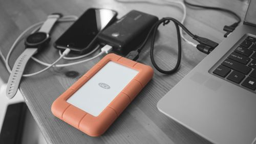

How to Back Up Your Phone for Free
A backup is the difference between losing a phone and losing everything on it. Both Android and iPhone include a free backup — it just needs to be switched on and checked occasionally.

On Android: Google backup
- Open Settings, then Google (or System > Backup on some phones), and tap Backup.
- Turn on Backup by Google One if it isn't already on.
- Check what's included: contacts, messages, call history, device settings, and apps. Photos and videos are handled by Google Photos backup — open Google Photos, tap your profile icon, then Photos settings > Backup, and confirm backup is on.
- Tap Back up now to run one immediately, and note the date shown afterwards.
On iPhone: iCloud backup
- Open Settings, tap your name at the top, then iCloud.
- Tap iCloud Backup and turn it on.
- Tap Back Up Now to run one immediately. Backups then happen automatically when the phone is charging, locked, and on Wi-Fi.
- Check the date of the last successful backup on the same screen.
What a backup does — and doesn't — include
- Included: contacts, messages, call history, device settings, app lists, and (depending on settings) photos and videos.
- Not always included: files in some third-party apps, music downloaded outside the usual stores, and anything stored only on a memory card. If something matters to you, check specifically whether it's covered.
- WhatsApp chats have their own backup setting inside WhatsApp (Settings > Chats > Chat backup) — the phone backup alone doesn't always cover them. Turn that on too.
Free storage limits — the one thing to watch
Google and Apple each include a free storage allowance with your account. Photos and videos eat it fastest. If backup fails with a "storage full" message, you have three free options before paying anything: delete large unneeded videos from the cloud, reduce photo backup quality to the storage-saver setting (slightly lower resolution, much smaller files), or move old photos to a computer and remove them from the cloud. See our guide on transferring photos to a laptop for the moving step.
Verify it actually worked
- After the first backup, check the backup screen for a recent date and time — "last backup: today" is what you want.
- Once a month, glance at the same screen. Backups silently stop when storage fills up or when a password changes, and the only way to notice is to look.
- If you get a new phone, sign in to the same account during setup and choose Restore from backup — your contacts, messages, settings, and apps come back with it.
A second copy, for the things that matter most
One backup is good; two copies in different places is better. For irreplaceable photos, keep a copy on a laptop or USB drive as well as in the cloud. That way a single account problem can't take everything with it. Our transfer guide covers the laptop step.
Before you sell, trade in, or give away a phone
Run a final backup first, then check the backup date one more time. Only after that should you sign out and reset the phone — a reset without a verified backup is how photos get lost permanently. Keep the old phone until the new one has restored everything; that way, if the restore misses something, the original is still in your hands.